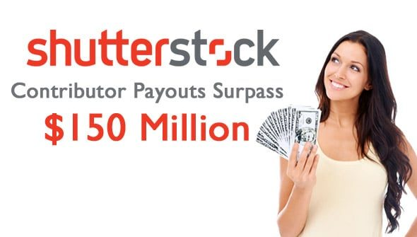
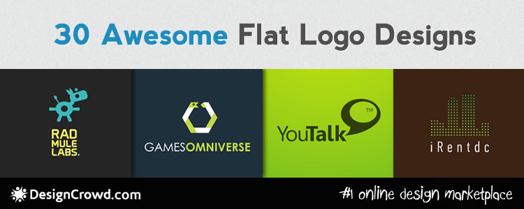
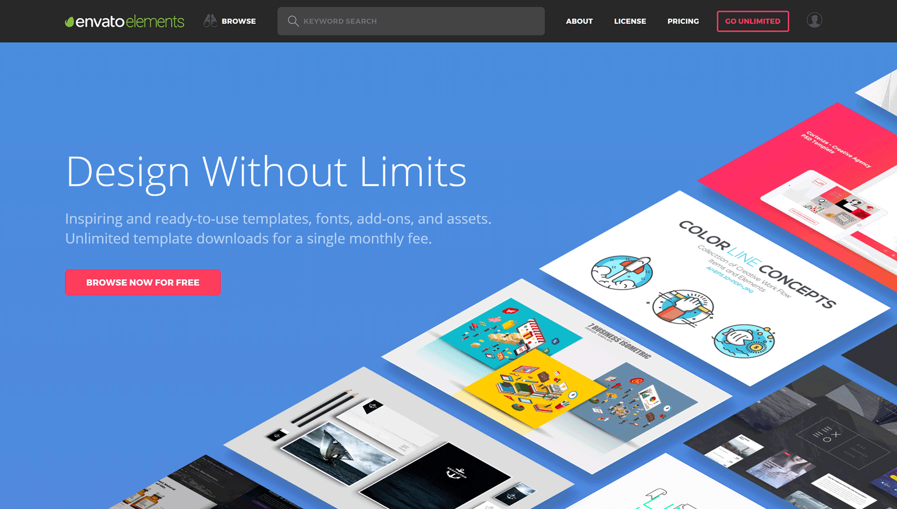

Tasarımdan Nasıl Para Kazanılır? Digital Pazarlama Nedir?
Hadi başlayalım! (Sitede olan linkler yeni sayfada açılır)
Bu makalede bunlardan konuşucağız
- Satışlar yap, ürün sat

Ne sata bilirim, nasıl sata bilirim?
Eğer tasarımcısanız direk olarak logo, illustrator, fotoraf, t-shirt dizaynları, modeller ve s. ne yapabiliyorsanız yapın ve çalışın ürününüz insanların isteyine ve almak istediye şeye uygun olsun.
Mesela ben bir 2D oyun yapmak istiyorum, ve bana güzel bir galaksi lazım, üzerinde bir kaç tane yıldız olsun, ve bir astronom da olsun. Şimdi bunlar bana bir direk foto olarak diyil, deyiştirele bilecek bir yapıda olması gerekiyor. Ve ben ne yapiyorum, gidiyorum freepik.com sitesine ordan yazıyorum ne almak istediyimi ve karşıma bir Adobe Illustrator değişitirile bilecek ürünler çıkıyor ve eğer sevdiysem onu para verip alıyorum. Bu bir kolay, her hansı alıcının yapdığı şeydir, çünki o adam o işe para veriyor, size durduk yere para vermez, o yalnız sizin yapdığınız işe para veriyor.
Şimdi eğer kendini güvenli ve ben yapabilirim şekilde hissidiyorsan, aşağıdakı sitelerde neler sata bileceyini göstereyim.
Etsy.com
Eğer diyelim sen bir “Life is cool” adlı bir logo hazırlamışındırsa onu bu sitede satman en doğru seçim, ve metadatası çok büyük, küçük bir foto olsa bile onun hakkında çoğu şey yazmalısın ve tabiikide keywords, onları çok iyi kullan, ve birde trende çok önem ver. Bunun için Google Trends-i kullanabilirsin. Hatda bazı sitelerden farklı olarak senden bir ürünü neden satıyosun diye sormaz. Statiyi iyi.
Hatda iki tane mobil appı olarak var, birisi müşteriler için, diğeri yaratıcılar için. Para kazanmak içinse senden bir PayPal ödeme sistemi talep ediyor.
Shutterstock.com

Eğer alıcı diğilsen siteye böyle girme, yaratıcıların sitesi contributor olarak bilinir (Satış sitesi). Bu site benim favaritim diğil ama ekstra bir kar alde ede bilirsin. Bu sitede satmanı önerdiğim şey bir değiştirile bilecek üründür ve site png formatı kabul etmiyor. Yüksek kalitede olması çok önemli, eğer ilk defa işlediyorsan .Aİ formatında sorun yaşaya bilirsin. Onu da çabuk hallediceksin zaten. Şimdi diyelim sen bir karakter hazırladın, bunu bu sitede satman çok doğru neden çünkü bu sitenin pazarlama yeri öyle kurulmuş ki, orada müşteri aramak istediyi şey adi slogan diyildir, orada büyük bir şey arıyorlar, anlamlı bir şey arıyorlar. Ama bir fotorafcıysan çekdiyin fotorafı shutterstock-da satman çok iyi çünki o zaman senin fotorafın arama motorunda üzerinde şirket markası olarak görünür ve almak isteyen kişi onu siteye giderek, para verip alır. Şimdi geldik para konusuna, bu site hem PayPal, hemde Payoneer sistemi ile çalışa biliyor. Bana sorarsanız, Payoneer seçim derdim, çünki paypal çok karmaşık, ama sonradan zaten değiştire biliyorsunuz. Ve ürünüze bir değer veremiyorsunuz, yani tüm ürünler aynı paraya satılır. Her satışa göre size 25 cent geliyor. Şimdi diyelim eğer satışınız 100 dolları geçtiyse o zaman standart olarak 1 aydan sonra paranız sitetedi hesabınıza yatırılıyor ve onuda seçtiyiniz ödeme sistemi ile kartınıza transfer ede biliyorsunuz.
Ekstra olarak da her gönderdiyiniz işe 5 gün süre ile cevap veriliyor ve eğer kuralları aşmısınızsa, başka birisinin logosundan, yada efendim bir yüzünden aldıysanız onu redd ediyorlar. Ve kabül olunmuyor. Ama bu sitede bunlara göre size bir protokol, suç yazılmıyor.
Designcrowd.com

Bu site bir direk satış yeri deyil, burası bir işçi ve müşteri yeridir. Şimdi nasıl çalışıyor. Siz bir profil açdığınız zaman hemde kendiniz için tanıtım yeri açıyorsunuz, site size bir ad veriyor yani başlangıc gibi, profosyonel gibi, tabii ki, ilk aşamada size 5 yıldız dan hiç birini alamazsınız çünkü hiç bir şey kazanmadınız.
Eğer bir tasarcımıysan sen sitede güclü yerlere ulaşa bilirsin. Mesela diyelim ben bir müşteriyim ve bir şirket kurmuşum, ama logom yok, ne yapabilirim, giriyorum siteye bir ilan veriyorum, ben böyle bir logo istiyorum, işte efendim burası böyle olsun, şurası böyle olsun, rengi bu türde olsun, çok abartılı olmasın, ve size bu logolarıda veriyorum, yani bunlar gibi bir şey olsun, ve bu kadar zaman veriyorum, mesela 5 gün, ödemeyide peşin yaptım yani eğer süre biterse bana gelen logolardan birini mutlaka seçmeliyim, ve parasını siteye ödüyorum.
Şimdi sen ve diğer tasarımcılar ne yapıyorsunuz. Benim ilanımı orada, açıb okuyorlar. Kabul ediyorlar.
Şimdi sen bü süre boyunca yalnız diyilsin senin gibi belki 10 tane tasarımcı benim için logo hazırlıyor. Şimdi her kes bana kendi logoların göndericek. Sizin işlerinizide yalnız ben göre biliyorum, sizler diyil. Şimdi tutalım ben senin logonu sevdim. Ama bir küçük bir şeyde değişiklik istiyorum, ve sana orda değişiklik yap bana gönder diyorum. Ve sonda afferin sana, sen ilk satışını yapdın. Ve senin burada parandan ziyade bir iş kabiliyetin de artdı, yani site senin bu başarını sana yıldızlar vererek, kutluyor, hemde sen o yıldızlar sayesinde, müşterilerin gözünde daha da yükseliceksin ama tabii ki de yapdığın iş en önde geliyor.
Paraya gelince, her bir ilan deyeri aslında 300 dolara kadar çıka biliyor, aşağası 50 dollar ola bilir.
Bir püf noktası istiyorsan tasarımlarda çok abartı yapma, zaten sen kazanmış tasarımı göre biliyorsun sonda. Görüceksin, belki de senin tasarımdan çok daha kötü ama bu onun aradığı tasarım, umarım anlata bilmişimdir.
Envato.com

Çok kaliteli bir site diyebilirim, sen oraya tam olarak bir ay içinde odaklanıb, anlayacksın. Eğer eskiden duymuşsunsa bu sitede çok ürün bulamazsın belki ne aramak istediyini bularsın ama çok seçim yoktur. Onunda anlamı budur ki, onlara gelen işlerin sitenin kurallarına uymamasındadır. Mesela tasarımdan ayrı, bir veb site template satıyorsan senin yapman gereken şey o siteyi hosting ve domain alıp public yapmandır. Yani o siteyi sata bilmen için ilave kendi siten için para ödemelisin.
Ama tasarım işi zor değil aslında, yani bir tasarım gönderdiyin zaman, onu uzun zaman inceledikten sonra sana cevap veriyorlar ve ilk defa ise büyük ihtimal kabul etmeyeceklerdir. Çünki neleri ise bilmemiş ola bilirsin. Ama Envato sana nerde yalnış yaptın diye anlamlı bir email gönderir hiç sıkıntı çekme.
Envato Payoneer sistemi ile çalışa biliyor. Ve ödemelerde eğer 50 dolları geçtiyse paranı çeke bilirsin. Envato hakkında bir kaç tane daha konuşucam diğer bloglarda ama şimdilik bu sitenin başlangıç için diyil profesyonel biri için olduğunu sana önceden demek istiyorum ama para konusuna gelince envato sana en çok kazandıran sitelerden olur eğer doğru yolunu bulursan.